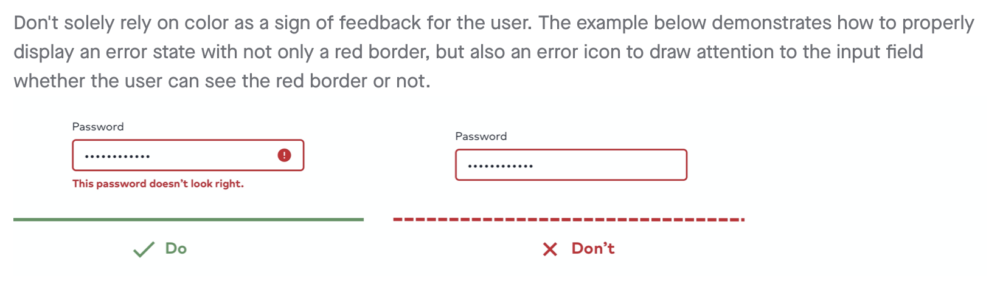

Preface
What is a design system and why have a team dedicated to maturing it? A design system is a collection of components within a brand family or style guide
equivalent. The system is then shared amongst designers and developers to streamline their workflow, create conversation and
manage consistency. With a design system comes research, design language advancements and engineering.
The best explanation I have heard is...LEGOs! There is a massive amount of pieces that go into
building, say, the Millennium Falcon* out of LEGOs. These pieces are differentiated by colors, shapes and sizes. The Falcon wouldn't look right if it were built with a rainbow of parts, would it?
Especially in the foreground of
gunmetal and dark-toned palettes. I'll admit, the image below is quite impressive. But the time, effort and money taken to complete it does not meet its potential.

The same goes for one's digital presence. The Millennium Falcon may still fly but it would be hardly recognizable. A company with digital products built from an inconsistent UI would, as well, be
hardly recognizable.
A design system is similar to having an organized collection of LEGOs with the ability to use them for a variety of gadgets.

Along with consistency comes time. An elongated project roadmap would be required to forage all of the right components
in assembly of the Millennium Falcon. Wouldn't it be convenient to have a pre-defined set of pieces unique to
constructing the Falcon? To have
all of the integrants properly colored and sorted with directions on how to use them? Exactly, I thought so too. Hence,
a design system.
*For non-Star Wars fans:
- W H A T
- Feel free to replace the Millennium Falcon with any number of LEGO structures. It's an adaptable example.
Additional Benefits
UX designers can now prosper in the light of designing true, accessible
experiences instead of just UI. Business partners can sleep with both eyes closed now knowing that their timeline is strategy-driven. "What-ifs" and business cases
can be more efficiently researched and built with design systems. Developers aren't starting from scratch and an actual community congregates.
Design systems kindle relationships between a variety of teams and colleagues. In a company with 200,000+ employees, that's not too shabby.
Let's go atomic
If you've never heard of atomic design, bookmark Brad
Frost's Atomic Design structure and deep-dive it later. Essentially, it
breaks down a design system of components into levels for easier implementation and organization. The chunking method at its finest! Atoms are the
smallest (let's not go sub-atomic right now). Molecules are the
middle-ground and often made up of atoms. Finally, organisms are the largest components created by atoms and molecules.
It's a component-centered approach that provides easier
comprehension for designers and a more structured system for developers. It's basically built off of itself! That's some cool beans.

Level up and we are talking templates and pages. These layouts are built from elements, large and small, of the design system. Templates can streamline design and development phases incredibly. I've seen them come in handy when brainstorming different design patterns, pulling already-built sections of a template for designs, and faster prototyping in development.
Neutron
Neutron has placed me on a team of rockin' individuals who advocate software design, human-computer interaction methodologies and the psychology about why interface designs are the way that they are.

The responsibility of educating colleagues about designing applications can be daunting and refuted by others. However, I love this practice and embrace it as an opportunity to learn more about the cognitive psychology of interface design and how to best supply research in support of any design decisions made.
My roles on the Neutron squad
-
Component-centered research. Documentation surrounding the Neutron design system needed
validation and direction. Our previous docs were insufficient in the way they portrayed component usage and best practices. It also
didn't provide designers with a "quick & easy" resource to share with business partners.
So, I began researching how components should be implemented, when to use which component, why these guidelines exist and supporting human-centered design methodologies to exemplify our recommendations. Market analyses, A/Bs, usability testing, user surveys and pattern discovery resulted in the informative ability to justify our design system.
-
Documentation. We know how important documentation is to the end-users of our design system. I was
able to take component-centered research and feedback from our
user surveys to mend together a documentation site that is already making a difference. As Neutron grows, the more
necessary it is to have an organized, educational space in which it is dedicated.
Design decisions without data is simply an opinion.
I have created a documentation site with help from my peers that not only tells the what but also the why of the design system UI. Executing the research and gathering the data to uphold design decisions will captivate the audiences from business to analysts to engineers as well as help designers & developers better their craft.
 -
Design system rollout to existing products. As I'll later discuss, this is a task of patience.
Administering 1:1's and auditing current applications takes time but
is extremely satisfying and is seriously a form of meditation! After re-skinning a product with Neutron, there is unanimous acclamation. A
visual representation of what an app could look like can quickly get
business and developers on board for adapting the design system. Below is a complete website overhaul leveraging the Neutron design system.
 HCA Healthcare Careers site case study
HCA Healthcare Careers site case study
- Consulting. Neutron is being implemented across the company and even by third-party vendors! This is very exciting. We engage in feedback reviews for these "Neutronees" to help guide the use of the kit, design implementation and accessibility. Watching the wave of Neutron continuously expand to reach company-wide products is incredible.
-
Bridge between design & development. I live on the design and the development team. Neutron's
design squad is where the research and design build happens
supported by standards and guidelines. It's important that Neutron's codekit adheres to the design system's guidelines
including anatomy, usage and interactions. I had a blast
setting up Neutron's components in CodePen to demonstrate the
animation and structure of the components. These CodePen snippets now proudly
live within our documentation site. (Below is just an image, sorry!)

-
Initial codekit builder & current co-creator. Neutron's development library began as an
HTML/CSS/JS kit. We built through version 1.2 of Neutron's
responsive web system until coming to the realization that there is a missed opportunity, per se, in an HTML
kit. While many developers were using the library and established an
engaged community around Neutron Dev, framework developers using React or Vue or Angular were at a loss and
suffered from code bloat when implementing Neutron.
They needed a modular approach. We have since then open-sourced Neutron within the company to build out a StencilJS code library that can be pulled in any format needed from HTML to React to Vue.

- Building with Neutron! Eat your own dog food. Designing and developing with Neutron allows us to walk in the users' shoes and identify any gaps within the kits ourselves. Designing prototypes with Neutron can reveal issues of poorly adapting components, inaccessible overrides or the rate of needing to detach components. I have also developed shells with Neutron to act as functional prototypes for product designs. This gives me a look into the codekit from a front-end point of view. Here I can find issues like poor flexibility in components or improper styles that may overwrite other areas of a product.
Design System Documentation
As it raises awareness, broadens outreach, informs visitors and advocates best practices, documentation is one of the most important foundations of a design system. A year ago (early 2019) our team wanted a place to showcase our components and demonstrate Neutron's significance. Now, we leverage InVision's DSM to not only house the physical design system but also exhibit accessibility within the system, exemplify best practices, define component usage and convey anatomy. We have a central location for details about components, how to (and not to) implement them, resources to internally-written research papers and externally-cited articles, and it also allows for all of system kits to be in one place (responsive web, iOS Sketch, 10ft Views, Android and Voice & Sound).

Documentation Essentials
-
Accessibility. This includes WCAG AA standards, accessible type usage, color ratios, grids/spacing, and development.

- Branding. The documentation site displays brand guidelines & standards to internal users and third-party vendors.
-
Resources. A one-stop shop is a good term for it. While working with teams and external parties, having this central location provides the ability to
download brand fonts and design system libraries without a handful of links.

-
Component usage. As the core Neutron team, we receive a lot of inquiries about how a component should be implemented in different use-cases. Researching
and documenting usage practices for each component makes it easy for designers to find answers and present these solutions to business partners if needed.
-
Component best practices. Design systems are wonderful and so easy to execute but they can also be easy to manipulate. Design tools like Sketch, Figma and Adobe XD
allow designers to change text and color and shapes. Sometimes this may be necessary to carryout a design. Still, best practices are beneficial to document in the case that a component doesn't meet utmost usability or accessibility. This is where the dos and don'ts make their debut.

-
Development resources. Not to be ignored, development documentation is crucial. Like Bootstrap or Material Design's documentation, devs need to know how to
literally create components with classes and utilities. Including coded component prototypes within the documentation not only helps developers know what classes to use, but it
also sheds light on interactions and component states.

Check out the Design Systems Repo to see an entire collection of design systems & their documentation.
The Wave
Take the staircase one step at a time.
Rolling out a design system across a large organization takes patience. Popping into engineers' product roadmaps for a "UI update" isn't bought too easily. Re-skinning
current products with the new, branded design system is done one interface at a time and usually starts with a visual design overhaul.
I've administered plenty of "1:1s" (one-for-ones) in my time working with Neutron and my advice is to offer the first phase's scope with just
a UI refactor and prescribe following phases to implement improved usability and accessibility practices.
Below are a few 1:1s; before Neutron on the left and after Neutron on the right.


Powering a design system
Once our design system grew a bit more from initial components, typography, grid system and brand strategy, it still needs ongoing maintenance. We are fortunate to have a multidisciplinary team of researchers, designers, engineers and management working together to keep our design system fit and mature.
Continuous Research
Experience designers don't shy away from research. We are familiar with practices and standards defined by research studies we perform. A design system
is no different.
Documenting components alone calls for component-based research that circles best practices, usages, anatomy and accessibility. With that comes A/B tests for component design
and templates in which we use UserTesting. User and benchmark tests are also released to gather feedback from Neutron's users.
This helps us identify any gaps or issues in the system.
There is always a good deal of ongoing discovery work from our scout team. Defining new component designs rely on external market analysis and internal pattern analysis to provide direction.
Continuous Design
You may be thinking, "well of course a design system needs...design" and you're not wrong. But I'd like to emphasize the amount of persistent design occurs that in the development of a
design system. Updates in design tools and operating systems happen often. Sometimes an update in your design tool may throw some things out of whack, causing the need for some rework.
Operating systems as well undergo updates. If you have design kits for iOS and/or Android devices like Neutron does, then the team needs to adapt to continual updates those systems release. An additional
update a company-wide design system needs to be vigilant of is brand reform. This can be anything from removing a color or adding a secondary palette or changing the logo.
And then there is the seemingly obvious, updating or designing new components. Requests for new components spawn discovery which then summons the actual design of the component for your design
system. Continuous design also accounts for the hours and days spent negotiating the perfect structure or debugging an issue in the system.

Continuous Development
Thus far, Neutron has begun it's development using StencilJS. With web components, the code can be pulled in any format needed such as HTML, React, Vue etc. This solution seems to be the most scalable so far, especially across such a large company.

Moving forward
Ahead, Neutron will meet exciting times. We have come a long way and yet have a long way to go. New developments in other kits like 10ft views and android are to come while also
adapting a voice & sound strategy for conversation design. That also leaves a weighted backlog for design system engineers like releasing the iOS SDK, completing the Stenciltron (StencilJS + Neutron)
project, and beginning the Android build.
Nevertheless, Neutron will continue spreading throughout the digital presence of HCA Healthcare as we build, manage, research, document and advocate for it.